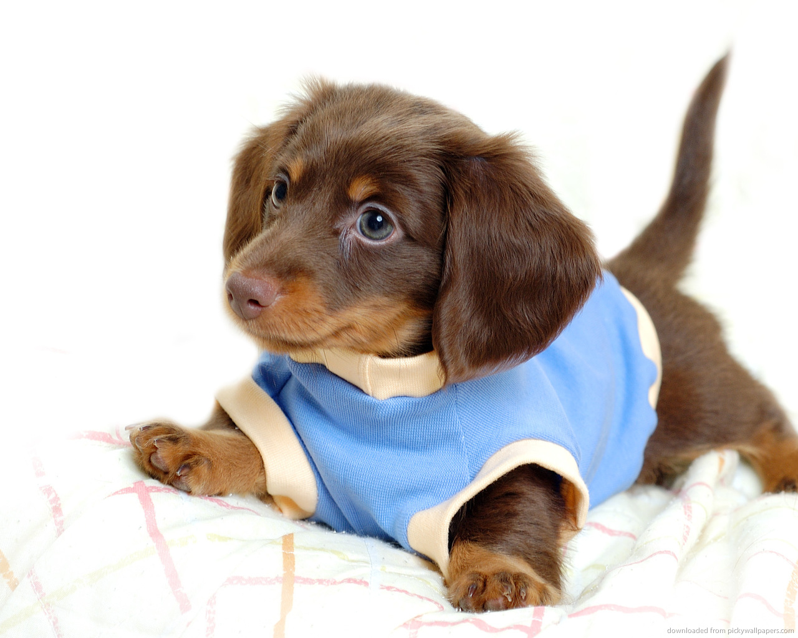

Такса
Та́кса (нем. Dachshund) — охотничья порода собак, отличающаяся короткими ногами и длинным телом.
Существует несколько разновидностей такс, отличающихся размерами и весом — стандартные, миниатюрные и кроличьи. Также такс разделяют по шёрстному покрову на гладкошерстных, длинношёрстных и жесткошёрстных.
Таксы имеют множество окрасов. Наиболее распространены чёрно-подпалый, рыжий, коричнево-подпалый, мраморный (чёрный и коричневый мрамор). Встречаются таксы тигрового и чёрного с тигровыми подпалинами окрасов, последний на данный момент является непризнанным FCI окрасом такс. У жесткошёрстных видов очень распространен кабаний окрас (в других разновидностях он не признан). В последнее время в России и Украине стал встречаться кремовый (палевый) окрас у длинношёрстных разновидностей, но он непризнан FCI. Работа с этим окрасом ведется в рамках UCI.